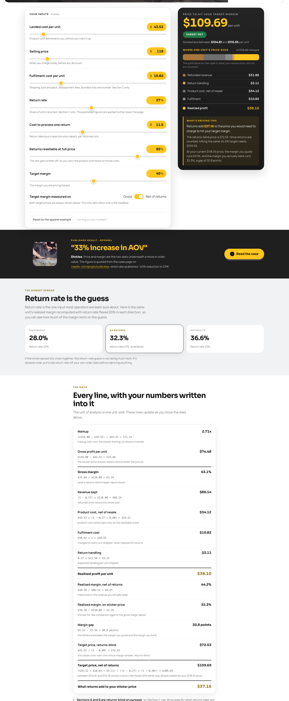
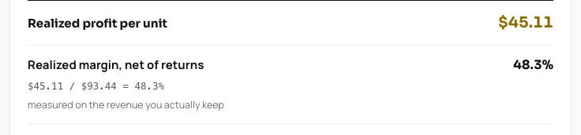
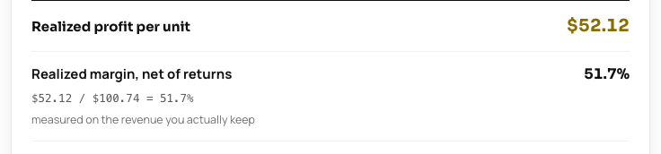
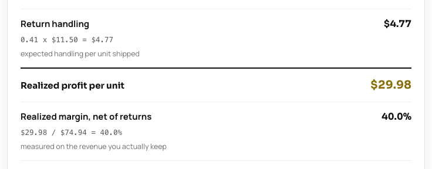
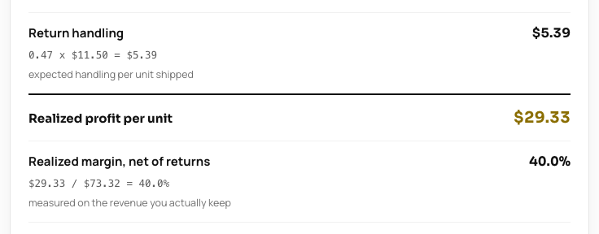
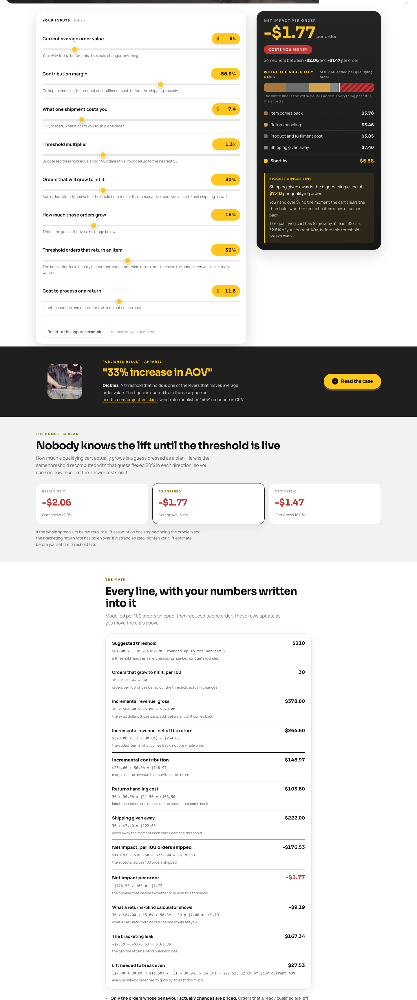
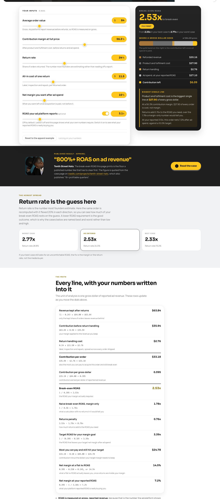

Pack 09 of 09 · Tutorial · free, runs in Claude
Set the price and the launch offer for a new style before it goes live, with returns inside the math.
Runs in Claude Time 30 minutes New data needed One landed cost Steps Nine
Tools / The Claude pack / Price an apparel drop in 30 minutes
The walkthrough
You take one landed cost and three candidate prices through eight calculator runs, then paste the result blocks into one Claude chat.
The autumn drop is sampled, the landed cost is confirmed, and the price is still the number somebody picked because it sits nicely next to the rest of the collection. The style has no return history because it has never shipped, so every conversation about it ends in a guess about how much will come back. You have thirty minutes and one landed cost. This walkthrough replaces the guess with a ceiling: for each price you are considering, the maximum return rate that price can absorb and still hold your margin target, printed next to the return rate your closest comparable style actually runs.
Every screenshot below is a real run on Northbay Supply, a sample store. Northbay is a synthetic apparel brand built for this walkthrough and labelled a sample store everywhere it appears. Put your own landed cost and candidate prices through the same eight runs to get your own ceilings.
Northbay's new style is a merino crew. Landed cost $43.52. Return handling $11.50. Resellable share 80%. The comparable, a lambswool crew already in the line, returns 27% on the trailing year. Target margin 40%, measured net of returns.
That comparable rate is the only return figure in this whole walkthrough, and it never gets applied to the new style as a forecast. It is a marker to put next to the ceilings.
About 3 minutesPick the three you are genuinely arguing between. Northbay: $118, $128, $138. Fulfilment cost moves with price because card fees do: $10.82, $11.11, $11.40.
About 2 minutesEnter landed cost, the rung price, that rung's fulfilment cost, the comparable's return rate, your return handling cost, resellable share and target margin into Pricing and Margin. Leave the target margin measured on "net of returns". Run it three times, once per rung.



At the comparable's 27%, Northbay's three rungs bank $38.10, $45.11 and $52.12 of realized profit per unit, at realized margins net of returns of 44.2%, 48.3% and 51.7%. All three clear the 40% target at 27%. So the decision lives above 27%, in how much return each rung absorbs before the target breaks.
Open the calculator About 6 minutesGo back to the same page, leave every other dial where it is, and drag the return rate up until the arithmetic card row "Realized margin, net of returns" crosses your target. The rate where it crosses is that rung's ceiling: the most return this price can absorb before your margin target breaks. Do it once per rung and write down three numbers.


Northbay's ceilings: $118 runs out at 34.66%. $128 holds to 41.45%. $138 holds to 46.87%. Against a comparable running 27%, that is 7.66 points of cushion at $118, 14.45 at $128 and 19.87 at $138. The cheapest rung carries the least room to be wrong, and pricing down is the instinct when a style has no history behind it.
Open the calculator About 8 minutesA launch is usually where somebody suggests a free shipping threshold. Enter your current average order value, contribution margin, what one shipment costs you, the threshold multiplier you are considering, the share of orders you think will grow to hit it, how much you think they will grow, the return rate on those threshold-driven orders and your return handling cost into Free Shipping Threshold.

The tool suggests a $110 threshold for Northbay and then rules against it at the lift entered: minus $1.77 per order. The qualifying cart has to grow by $27.53, which is 32.8% of the store's average order value, before the threshold breaks even. The line worth reading twice is the bracketing leak of $167.34 per 100 orders: a returns-blind calculator shows this threshold costing $9.19 per 100 orders, and the real figure is $176.53, because the run was entered with a higher return rate on threshold-driven orders, which is a scenario dial you set yourself.
Open the calculator About 3 minutesEnter your store's average order value, contribution margin before returns, return rate, return handling cost and your target net margin after ad spend into Break-Even ROAS.

Northbay needs 2.53x to break even once returns are inside the number, against 1.78x if you leave them out, and the most it can pay to acquire one order is $33.18. A price is only real if the ads that sell it clear this floor.
If you want an outside figure to sanity check a return rate against, the published figures block further down each calculator page carries cited sources. Nothing on this page uses them. The comparable style in your own catalogue is the honest comparator.
Open the calculator About 3 minutesCopy the arithmetic card off each run, the block headed "Every line, with your numbers written into it", and paste them under the headers below.
The drop pricing prompt
One prompt, one chat. Its last rule bans the one thing everyone wants here, a guess at the new style's return rate.
I am pricing a new apparel style before it goes live: a [STYLE], landed cost $[COST], going into an autumn drop. My store runs [ORDERS] orders a month at an $[AOV] average order value and a [R]% return rate. The closest comparable style I already sell returns [C]% on the trailing year. The new style has no return history at all. Work only from the numbers below. Rules I need you to hold to: - Never introduce a number I did not give you. Every figure in your answer must be one of mine or arithmetic on mine, with the arithmetic shown. - Never quote an industry benchmark, a typical rate, or what other stores do. - Never predict what a fix would deliver. If I ask what something is worth, compute it from a number I supplied and label it as arithmetic on my input, not a forecast. - If something you need is missing, name the exact report or calculator to go and pull. Do not fill the gap. - Plain text. No em dashes. - Never estimate the new style's return rate. I want the maximum return rate each price can absorb, with the comparable's [C]% printed next to it. BLOCK 1: PRICING AND MARGIN at $[LOW], run at the comparable style [C]% return rate [paste the headline, the verdict tier, the range line and the whole arithmetic card from resources.risedtc.com/tools/pricing-margin/] BLOCK 2: PRICING AND MARGIN at $[MID], same [C]% return rate BLOCK 3: PRICING AND MARGIN at $[HIGH], same [C]% return rate BLOCK 4: PRICING AND MARGIN at $[LOW], return rate dialled up to [L]%, where realized margin net of returns crosses my target BLOCK 5: PRICING AND MARGIN at $[MID], dialled up to [M]%, where it crosses the same target BLOCK 6: PRICING AND MARGIN at $[HIGH], dialled up to [H]%, where it crosses the same target [paste each block the same way] BLOCK 7: FREE SHIPPING THRESHOLD, store level [paste from resources.risedtc.com/tools/free-shipping-threshold/] BLOCK 8: BREAK-EVEN ROAS, store level [paste from resources.risedtc.com/tools/break-even-roas/] Give me back, in this order: 1. A three rung price ladder for $[LOW], $[MID] and $[HIGH]. Columns: price, realized profit per unit at the comparable [C]%, realized margin net of returns at [C]% (use the arithmetic card row labelled "Realized margin, net of returns", never the "on sticker price" row), the maximum return rate that still holds my 40% target, and the headroom in points over the comparable's [C]%. 2. One sentence on which rung has least room and why, using the three ceilings. 3. The launch offer question: I want a cart threshold and an opening offer. Use block 7 to tell me what the store level threshold does today, and if you cannot price a launch offer from what I gave you, say exactly which calculator run to go and do instead of estimating it. 4. The price to walk away from, with the reason in dollars. Under 500 words.
Write these down before you close the tab:
Northbay's version: launch at $128 with a 41.45% ceiling against a comparable running 27%. No threshold at launch, because the cart has to grow $27.53 before it pays. Walked away from $118, where the buffer to the ceiling is $7.26 a unit against $15.13 at $128.
About 1 minutePrice is set. The next thing that moves the return rate on this style is the product page: the fit sentence, the measurements a customer can check, the size chart column your category needs. That is rise-pdp-doctor in the RISE Claude kit, which takes one product page and its stated return reason and returns a rewritten title, description, fit block and FAQ, plus three tests. This walkthrough never touches page copy, on purpose, so the boundary between them stays clean.
Then, once the style has shipped for a quarter and has a return rate of its own, run the ceilings again with the real number in place of the comparable's.
Get the kit: the RISE DTC AI kit. Run rise-pdp-doctor on the new style's page before launch, and rise-return-rate-rescue on the store once the first quarter of returns has landed.
The comparable style's trailing-year return rate is the only return figure in this walkthrough, it never gets applied to the new style as a forecast, and every ceiling is a number the calculator printed at dials you set yourself.
Proof it runs
Every pack page on this site prints the whole output of a real run, so you can read what you are going to get before you spend thirty minutes on it. The store below is synthetic, built so the arithmetic is checkable by anyone.
Northbay Supply is a sample store. Every figure below is synthetic and none of it belongs to a client.
What came back on the sample store (verbatim):
1. Price ladder
| Price | Realized profit/unit at 27% | Realized margin, net of returns, at 27% | Max return rate (40% floor) | Comparable at 27% | Headroom |
|---|---|---|---|---|---|
| $118 | $38.10 | 44.2% | 34.66% | 27% | 7.66 pts |
| $128 | $45.11 | 48.3% | 41.45% | 27% | 14.45 pts |
| $138 | $52.12 | 51.7% | 46.87% | 27% | 19.87 pts |
Headroom arithmetic: 34.66 - 27 = 7.66 pts / 41.45 - 27 = 14.45 pts / 46.87 - 27 = 19.87 pts.
2. Tightest rung
$118 has least room: its ceiling is 34.66%, only 7.66 points above the comparable's 27%, compared with 14.45 points at $128 and 19.87 points at $138.
3. Launch offer
The store-level free shipping threshold from Block 7 costs $1.77 per order in the as-entered scenario. The qualifying cart has to grow by $27.53 (32.8% of your $84 AOV) before it breaks even, and it does not break even at 15% cart growth. Arithmetic: $148.97 contribution - $103.50 return handling - $222.00 shipping given away = -$176.53 across 100 orders, or -$1.77 per order. Running this threshold as a launch mechanic means you are paying $1.77 per order on top of whatever you give away on the new style.
For the opening offer itself: no launch-price calculator run is in what you gave me. Go and run the pricing-margin tool at resources.risedtc.com/tools/pricing-margin/ with the discounted launch price as the sticker price and 27% as the return rate, then check whether the realized margin, net of returns, still clears 40%. That run is the one to pull before you set the offer.
4. Price to walk away from
$118, because of what the 7.66-point buffer costs in dollars. At 27% returns, realized profit is $38.10 per unit (Block 1). The margin target breaks at 34.66%. At that ceiling, realized profit falls to $30.84 (Block 4). That is a $7.26-per-unit drop: $38.10 - $30.84 = $7.26. You lose $7.26 before you are below your floor, with no return history on the new style and a comparable already sitting at 27%. $128 gives you $15.13 of realized-profit drop to the ceiling ($45.11 - $29.98 = $15.13, Blocks 2 and 5). $118 does not give you enough distance from where the comparable already lands.
Section 3 is the refusal. Asked for a launch offer it had no price for, it named the run to go and do, and declined to invent a discount that clears the target. That is the same discipline the ceiling table is built on: the walkthrough never says what the merino crew will return, only how much return each price survives.
Where every figure in the answer comes from:
| Figure in the answer | Source |
|---|---|
| $38.10 / 44.2% at $118 | The Pricing and Margin run at $118, held at the comparable's 27% return rate, returns 38.09532 and 44.2249; on screen in assets/01-pricing-margin-118.png as "Realized profit per unit $38.10" and "Realized margin, net of returns 44.2%" |
| $45.11 / 48.3% at $128 | The same run at $128 returns 45.10532 and 48.2720; on screen in assets/02-pricing-margin-128.png |
| $52.12 / 51.7% at $138 | The same run at $138 returns 52.11532 and 51.7325; on screen in assets/03-pricing-margin-138.png |
| 34.66% ceiling | The maximum return rate that still holds the 40% net margin target at $118 is 34.664308; on screen in assets/04-pricing-margin-118-ceiling.png, where a 34.66% return rate prints "Realized margin, net of returns 40.0%" |
| 41.45% ceiling | The same ceiling at $128 is 41.451649; on screen in assets/05-pricing-margin-128-ceiling.png, same 40.0% crossing |
| 46.87% ceiling | The same ceiling at $138 is 46.869746; on screen in assets/06-pricing-margin-138-ceiling.png, same 40.0% crossing |
| 7.66 / 14.45 / 19.87 pts | Arithmetic the answer shows: each ceiling minus the comparable's 27% |
| $30.84 at the $118 ceiling | Live tool output at the recorded ceiling rate, on screen in assets/04 as "Realized profit per unit $30.84" |
| $29.98 at the $128 ceiling | Same, on screen in assets/05 |
| $7.26 and $15.13 | Arithmetic the answer shows: $38.10 - $30.84, and $45.11 - $29.98 |
| $1.77 per order | free-shipping-threshold.net_impact_per_order = -1.765302, on screen in assets/07-free-shipping-threshold.png as the headline "-$1.77 per order" |
| $27.53 and 32.8% | break_even_lift_dollars = 27.5311 and break_even_lift_pct = 32.7751, on screen as "Lift needed to break even" |
| $148.97, $103.50, $222.00, -$176.53 | incremental_contribution_per_100, returns_cost_per_100, shipping_absorbed_per_100, net_impact_per_100; all four on screen in the same arithmetic card |
| $84 AOV, 27% comparable, 40% target | Operator inputs, visible in the dials on every screenshot |
Northbay Supply is a sample store built for this walkthrough. Every screenshot on this page is a live run of the calculator linked above it, and every number in the text is the number on the screenshot.

From week one we run this ladder on live landed costs and return data, then set each drop's price at the rung whose ceiling holds. Book a 30 minute intro call and we will walk your next drop together.
Book an intro callMattan Danino CEO, RISE DTC Direct with the team. No pitch deck.